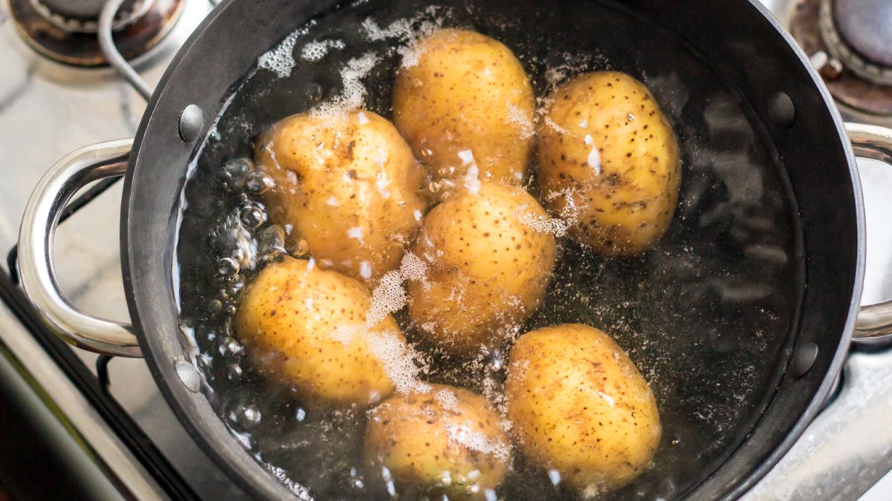

Potato Soup

Description
This is potato soup. It is traditional to eat this soup when having potatoes.
Potatoes bring great luck and prosperity and slide down easily in soup form.
Ingredients
Steps
- Put the water in a pot.
- Add the potatoes.
- Heat the water until it boils. Keep it boiling for 20 minutes.
- Add salt.
- Serve.